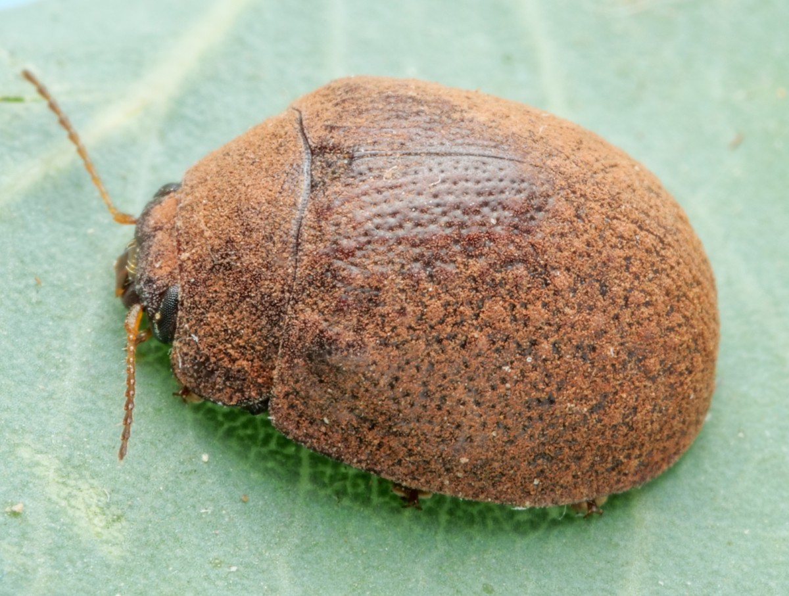
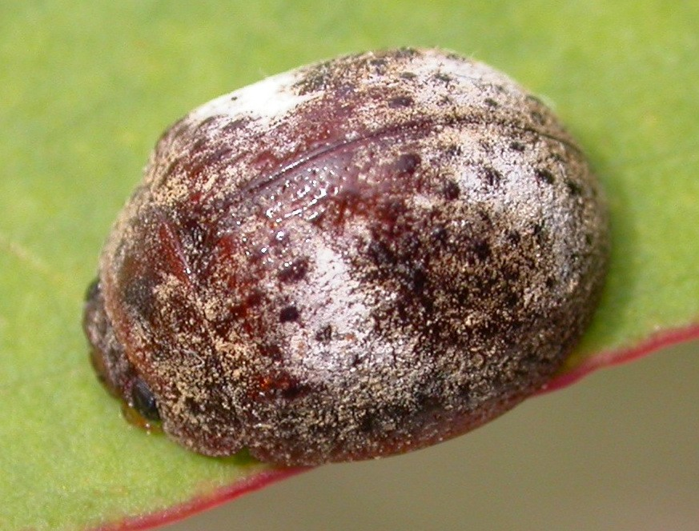
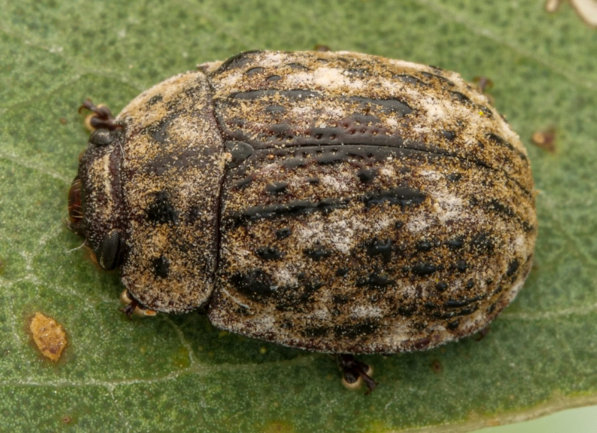
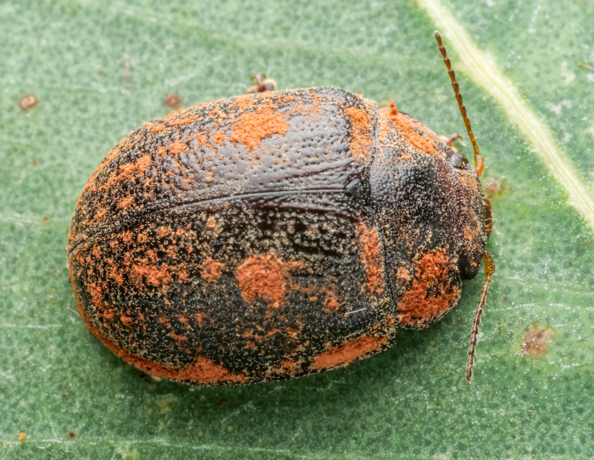
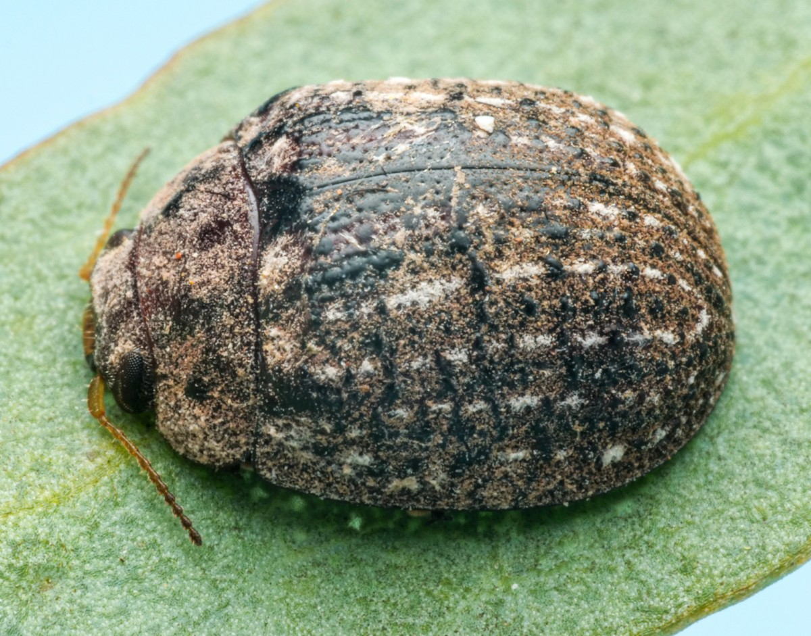
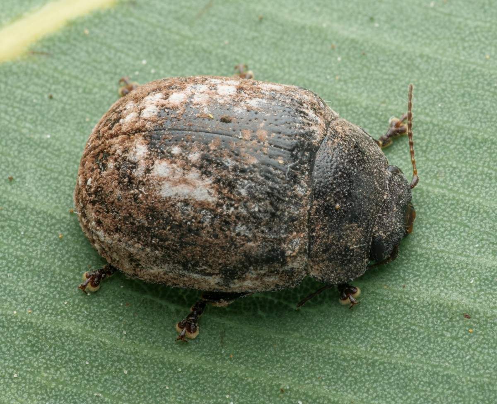

TrachymelaID
TrachymelaID
TrachymelaID
TrachymelaID
All mature (i.e., not teneral) adult individuals of Trachymela are covered in a layer of cuticular wax that may be uniform or form distinct patterns. The wax takes about 10–14 days to fully form after the insect moults from the pupal stage. This wax layer is easily lost or damaged; it can be rubbed off during handling or if the insect gets wet, while in specimens preserved in alcohol, it is always dissolved completely. The patterns of this wax layer are quite characteristic of many species and useful in the identification of live or well-preserved specimens. It is sometimes possible to discern the pattern, if not the colour, in specimens where the wax is missing by noting paler areas on the elytra and pronotum—these usually correspond to where the wax was densest on the living insect.

In this pattern, the cuticular wax is of a consistent colour and is uniformly distributed over most of the dorsum. In many species, the coverage is light, while in others it can be quite thick. Thickness can be variable within a single species. The wax may sometimes be slightly denser along the lateral margins of the pronotum and elytra.

Here, the cuticular wax is of two different shades. The densest and prominent wax is present in two bands: one a little behind the elytral base, in a depression in the elytra (the post-basal depression), where it extends from just anterior to the elytral summit towards the lateral margin, widening towards those margins. A second band covers much of the elytral apical area and may be a different shade to the anterior band. The wax in these bands is generally of a light shade, often greyish or almost white, less often a very pale brown. The wax on the rest of the elytral surface, the pronotum and the head is usually less dense, and mid- to pale-brown.

At least two shades of wax are present in this pattern. For example, the insect in the illustration has two shades of wax, one of a brown colour that covers much of the dorsal surface, with intermixed patches of a greyish, paler shade. However, these differently coloured areas are not arranged linearly or in clearly defined regions but appear to arranged in an almost random fashion.

With this pattern, specimens have a thick layer of cuticular wax along the lateral margins of the elytra and pronotum. This wax is often a reddish-brown colour, but what is important is the pattern and not the colour. Along with the margins, there will always be a thick covering of wax in the centre of the post-basal depression. Often thinner streaks of the wax are arranged linearly in the posterior half of the elytra, but these are not always present and not required to define this pattern.

In this pattern, the wax is of two different shades, with a (usually brown) wax scattered over much of the dorsal surface. A much paler shade of wax (often grey) is arranged in relatively thin, mostly parallel lines along the elytral disc. The lines are usually interrupted (often by dark verrucae), so that they look like dashed or dotted lines. In the most extreme cases, these dotted lines can be very sparse, with the gaps much longer than the "dots". Some of the lines may converge in the apical area of the elytra.

The area from around the elytral summit to the scutellum is either wax-free or very lightly-sprinkled with wax in this pattern. Surrounding this area is a broad band of greyish wax on each elytron that join up behind the elytral summit. A thinner band of gray wax is often (but not always) present in the lateral marginal area of the elytra, but is never thick as in the "Marginal" pattern and does not usually extend onto the pronotal margin. The rest of the dorsal surface is covered in a contrasting darker, brown wax.